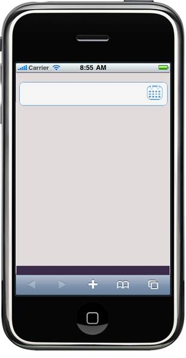

The following steps explain the addition of a date picker to an application using Builder.
1. In the view, invoke the DatePicker helper with the control ID as the first argument.
|
View [ASPX] <% {=Html.MobSyncfusion().DatePicker("DatePicker")}%>
Style Manager: <% { Html.MobSyncfusion().StyleManager() .Register(stylesheets => { stylesheets.Add(MobComponentType.DatePicker) .Theme(MobSkins.DarkNight); }).Render(); }%>
|
|
View [Razor] @ { Html.MobSyncfusion().DatePicker("DatePicker").Render();}
Style Manager: @{ Html.MobSyncfusion().StyleManager() .Register(stylesheets => { stylesheets.Add(MobComponentType.DatePicker) .Theme(MobSkins.DarkNight); }).Render(); } |
2. Build and run the application. The output is shown in the following screenshot.

Figure 176: DatePicker Input